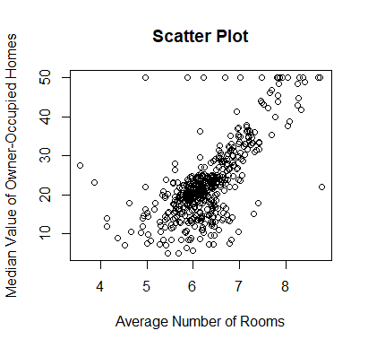

Exploring Linear Regression in Data Science
In this blog post, I'll take you through the basics of linear regression in the context of data science. Linear regression is a fundamental statistical method used for predictive modeling and understanding the relationship between variables.
Introduction to Linear Regression
Linear regression is a supervised learning algorithm used for predicting a continuous outcome variable (dependent variable) based on one or more predictor variables (independent variables). The relationship between the variables is assumed to be linear.
Data Analysis and Visualization
Let's explore the famous Boston Housing dataset and perform some exploratory data analysis (EDA) to understand the distribution of variables. I'll use R for this analysis, and here are some code snippets:
# Load the Boston Housing dataset
data(boston)
# Summary statistics
summary(boston)
# Scatter plot (example, adjust as needed)
plot(boston$rm, boston$medv, main="Scatter Plot", xlab="Average Number of Rooms", ylab="Median Value of Owner-Occupied Homes")
# Save the plot as an image
png("scatter_plot.png")
plot(boston$rm, boston$medv, main="Scatter Plot", xlab="Average Number of Rooms", ylab="Median Value of Owner-Occupied Homes")
dev.off()
imagesrc <- "scatter_plot.png"

Narrative
As we delve into the dataset, it's crucial to understand the problem we're trying to solve. Linear regression allows us to model the relationship between variables and make predictions. Through careful analysis and visualization, we gain insights into the data patterns.
Conclusion
Linear regression is a powerful tool in the data scientist's toolbox. This blog post provides a glimpse into its application, from data analysis to model building. Stay tuned for more explorations into the fascinating world of data science!